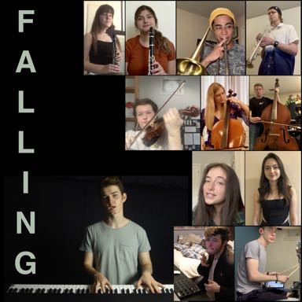

Song: Falling
Artist: 2AM in the Basement
Song Release Date: May 8, 2020
FOR RELEASE ON OR AFTER MAY 8, 2020 (0:00 Eastern Time)
Teen Musicians Create Cover of the Harry Styles Song "Falling" to Raise Funds for COVID-19 Relief
ALAMEDA, CALIFORNIA, May 8, 2020 — Musician Lorenzo Wood, under the band name 2AM in the Basement, today released a cover of the hit song "Falling," in collaboration with a virtual orchestra of 11 other teen musicians from around the United States, to raise money for COVID-19 relief. Proceeds from downloads and streams of the song, and views of the video, will go to a mix of charities that Wood has selected. The song can be downloaded, streamed, or viewed from URL LorenzoWoodMusic.com/falling .
"Falling" was originally recorded by English singer and songwriter Harry Styles, and released earlier this year.
Wood, 17, initially recorded the song in his home studio with vocals and basic instrumentation of keyboards, guitars, and electric bass. But then, after being in touch online throughout the Coronavirus crisis with a number of fellow young musicians all over the country — also graduating high school seniors, who have been accepted into Belmont University, Berklee College of Music, LA College of Music, and USC Thornton School of Music — he had the idea of accumulating additional parts for the song. He wrote arrangements for new instrumentation and emailed sheet music and reference recordings to both his new acquaintances and some old friends.
"I was a little worried about how some of the contributions would sound," said Wood. "Many of these musicians are stuck at home with their instrument but without any recording equipment. So a lot of them used their phones! Fortunately I was able to process and clean up the sounds just fine. The microphones built into iPhones are actually pretty good."
Additional instruments added to the mix include backing vocals, strings, brass, woodwinds, and drums/percussion.
Lorenzo is releasing the song "Falling" under his pseudonym, 2AM in the Basement, that he uses for cover songs. (He releases his songs under his own name.) Wood's cover of the song adds additional energy to the calmer original version. Singer/Producer Delanie Leclerc of Southeast Florida is a featured vocalist, singing a minimal, stripped chorus before a reprise featuring all of the contributing musicians at once.
The song also comes with a music video. Everybody contributed video recordings of their part at their homes.
Wood and his collaborators have decided to use this release, and its unique circumstances, as a way to raise funds for several COVID-19 relief charities. Lorenzo will be contributing the net proceeds from downloads and streams of the song collected for the first 2 months after its release to a mix of nonprofits: American Guild of Musical Artists (AGMA) Relief Fund, Feeding America, and Freelancers Relief Fund.
Wood credits his parents with the idea of using the song to raise money. "We are all feeling a bit overwhelmed with staying at home and social distancing," said Lorenzo. "But they helped me understand that what I'm going through is nothing to complain about. The unemployment levels are horrible, and like me, musicians all over the world are having their gigs cancelled. And many people who are able to work are putting their lives on the line every day."
Musicians are especially impacted by the societal changes due to the Coronavirus, as many rely on crowds at live performances, cancelled for the forseeable future. The AGMA relief fund, one of the targetted charities, was chosen out of solidarity with fellow musicians.
Readers are encouraged to watch the video, and share it with friends, and stream/purchase the song.
Ends
For further information, please contact info@lorenzowoodmusic.com or

Web Page
Please use this URL to link to "Falling": https://www.lorenzowoodmusic.com/falling
Recipient Charities
Collaborators
Most of the collaborators can be contacted via Instagram. Listed alphabetically by last name here:
| Terry Cowley | Costa Mesa, CA | Tuba, Upright Bass | @mea_hookani_pila |
| Ana-Laura Galindo | Hackettstown, NJ | Clarinet | @analaura_galindo |
| Elina Graham | CA | Clarinet | |
| Delanie Leclerc | Delray Beach, FL | Vocals | @delanieleclerc |
| Ada Papila | Palo Alto, CA | Vocals | @adapapilamusic |
| Anna Renton | Albany, CA | Violin and Viola | @anna.renton |
| J Tolub | Pasadena, CA | Trumpet | @jthecomposer |
| Zander Scott | Cary, IL | Drums | @zander_scott_ |
| Bailey Wise | Springfield, MO | Cello | @baileymwise |
| Andrew Wilson | Sacramento, CA | 808s/Drum Pads | @parayasound |
| Lorenzo Wood | Alameda, CA | Vocals, Guitars, Keys, Arrangement, Production | @lorenzowoodmusic |
| Andy Young | San Francisco, CA | Trombone | @andyyru |
Delanie Leclerc on Spotify: https://open.spotify.com/artist/547XK7rrl55NSCTqDa7TUx
Album Artwork
{kind=link}
Link to large image (3000 pixels square):
https://lorenzowoodmusic.com/album_art_3000/falling.jpg
Prerelease - SoundCloud Link
For review use only - not for distribution
https://soundcloud.com/lorenzowoodmusic/falling/s-ptYg7eF2lVL
Music Video

Music video: https://www.youtube.com/watch?v=ixUV87pKtBg
Preview for Press/Media ONLY, before release https://www.youtube.com/watch?v=6tgTYadpb7o
Thumbnail image: https://www.lorenzowoodmusic.com/press/falling_thumb.jpg
{kind=link}